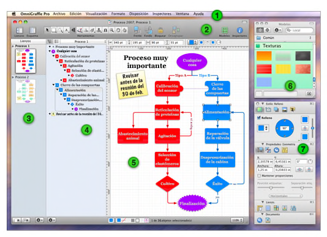

Introducción a la interfaz

 La barra de menús. Como en cualquier aplicación de Mac OS X, desde esta barra puede acceder a todo tipo de comandos.
La barra de menús. Como en cualquier aplicación de Mac OS X, desde esta barra puede acceder a todo tipo de comandos.  La barra de herramientas proporciona un fácil acceso a los controles que elija. Seleccione Personalizar barra de herramientas en el menú Visualización para distribuir sus herramientas favoritas en la barra de herramientas. Además, la barra de herramientas incluye la paleta de herramientas que se utiliza para crear diagramas. Puede mostrar u ocultar la barra de herramientas mediante el botón blanco situado a la derecha de la barra de título.
La barra de herramientas proporciona un fácil acceso a los controles que elija. Seleccione Personalizar barra de herramientas en el menú Visualización para distribuir sus herramientas favoritas en la barra de herramientas. Además, la barra de herramientas incluye la paleta de herramientas que se utiliza para crear diagramas. Puede mostrar u ocultar la barra de herramientas mediante el botón blanco situado a la derecha de la barra de título.  La barra lateral de lienzos muestra todos los lienzos del documento y las capas que contienen. Puede hacer clic en un lienzo para trabajar en él en la vista de lienzo principal.
La barra lateral de lienzos muestra todos los lienzos del documento y las capas que contienen. Puede hacer clic en un lienzo para trabajar en él en la vista de lienzo principal.  La barra lateral de esquema ofrece una visualización jerárquica en forma de texto del diagrama del lienzo seleccionado. Esta es una excelente manera de crear rápidamente muchos objetos, conectarlos entre sí y reordenar su estructura. También puede activar la barra lateral de listas, donde se muestra el orden de frente a fondo de cada uno de los objetos de cada una de las capas del lienzo seleccionado.
La barra lateral de esquema ofrece una visualización jerárquica en forma de texto del diagrama del lienzo seleccionado. Esta es una excelente manera de crear rápidamente muchos objetos, conectarlos entre sí y reordenar su estructura. También puede activar la barra lateral de listas, donde se muestra el orden de frente a fondo de cada uno de los objetos de cada una de las capas del lienzo seleccionado.  La vista de lienzo es donde se realiza el dibujo propiamente dicho. Puede utilizar las herramientas de dibujo para crear figuras y conectarlas mediante líneas. Puede arrastrar objetos, agruparlos, crear tablas y hacer muchas más cosas de las que pueden mencionarse en esta visión general.
La vista de lienzo es donde se realiza el dibujo propiamente dicho. Puede utilizar las herramientas de dibujo para crear figuras y conectarlas mediante líneas. Puede arrastrar objetos, agruparlos, crear tablas y hacer muchas más cosas de las que pueden mencionarse en esta visión general.  La ventana de modelos contiene numerosos objetos prediseñados para una enorme variedad de propósitos. OmniGraffle incorpora una gran variedad de modelos pero también tiene la opción de buscar en Graffletopia, un excelente repositorio de modelos creados por los usuarios de OmniGraffle.
La ventana de modelos contiene numerosos objetos prediseñados para una enorme variedad de propósitos. OmniGraffle incorpora una gran variedad de modelos pero también tiene la opción de buscar en Graffletopia, un excelente repositorio de modelos creados por los usuarios de OmniGraffle.  Los inspectores contienen todos los controles necesarios para modificar los objetos seleccionados en el lienzo, el lienzo en sí y el documento entero. Existen dieciséis inspectores distintos, organizados según el tipo de objetos a los que se aplican: Estilo, Propiedades, Lienzo y Documento.
Los inspectores contienen todos los controles necesarios para modificar los objetos seleccionados en el lienzo, el lienzo en sí y el documento entero. Existen dieciséis inspectores distintos, organizados según el tipo de objetos a los que se aplican: Estilo, Propiedades, Lienzo y Documento.